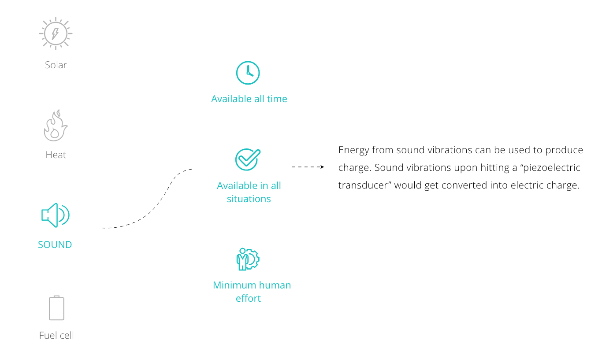
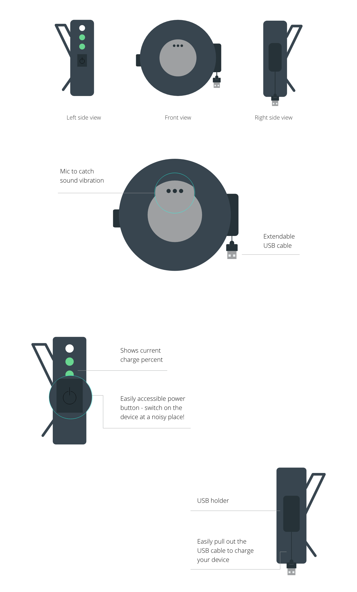

STUDENT DESIGN CHALLENGE
Making everyday interactions magical
Team Akriti Kaur, Ashutosh Agrawal, IIT Guwahati
Duration Nov - Dec'16
Theme: Everyday Magic
The aim was to look at everyday small interactions surrounding us,
and how through design and the creative use of new
technologies, one can improve it in a massive way
and make it magical.
Solo traveller
Seth is a solo traveller. He often takes vacation from his job and goes off to wander around places he loves outside the city. He is a really
busy person juggling between office and work. Since it's very difficult for him to take time out and plan a trip itself, he tends to forget his power
bank or often finds it discharged when he makes imprompto plans. He is proficient in technology and finds mobile phone an effective tool while travelling. Since he travels solo, a discharged phone poses a threat to his travel security. Following are the possible problems he might face in such a scenario:
So, where do we get the energy needed to charge phones in such scenarios?
A wearable which converts sound vibrations from the surroundings into electrical energy and can store it for later use. The device can be used to charge various devices like MP3 players, smart-watch, etc.
Around 420 billion dB of sound is produced at a given time from a frame of reference, and a mobile phone requires 5-12 volts to get charged. A noisy traffic or jet passing overhead can produce up to 100dB of sound , generating 50 millivolts of electricity, enough to give a smartphone battery a lift. This device will capture all surrounding sound vibration and store it for later use.
